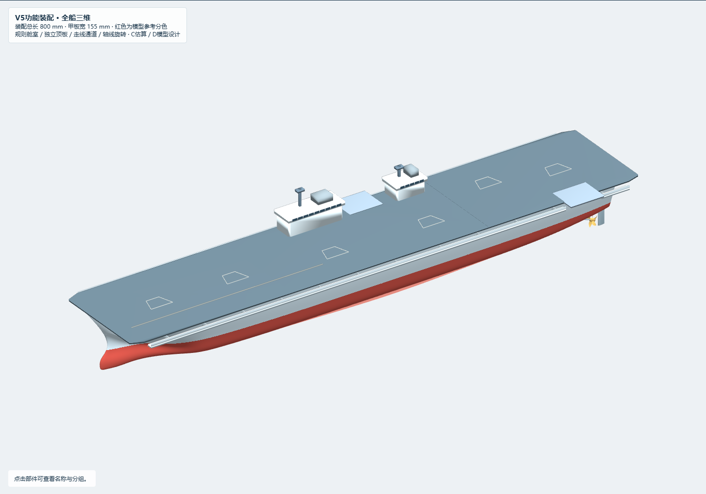
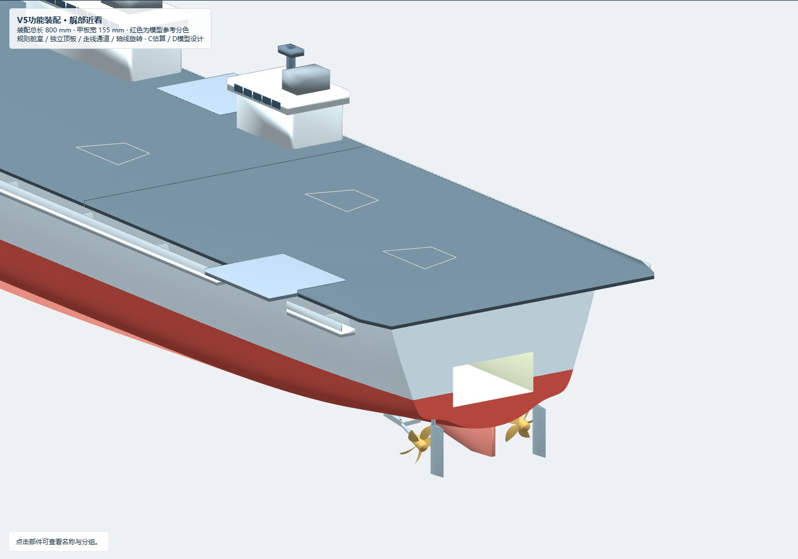
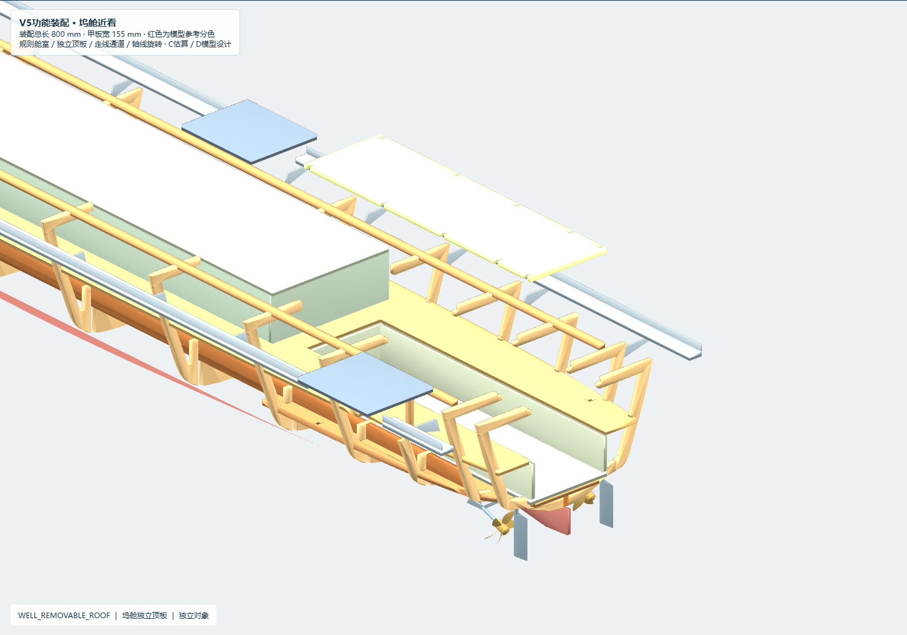
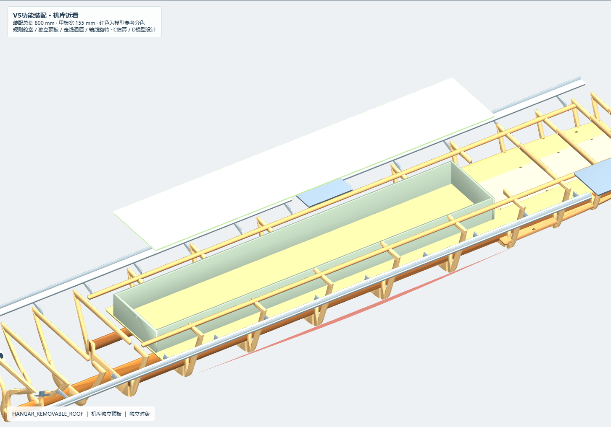
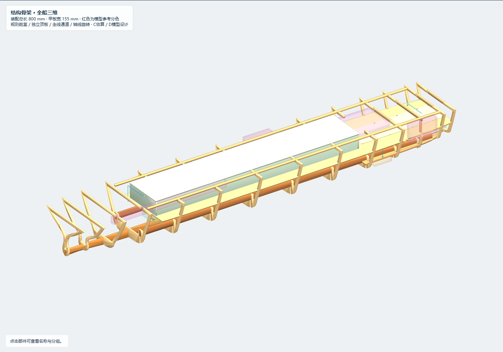
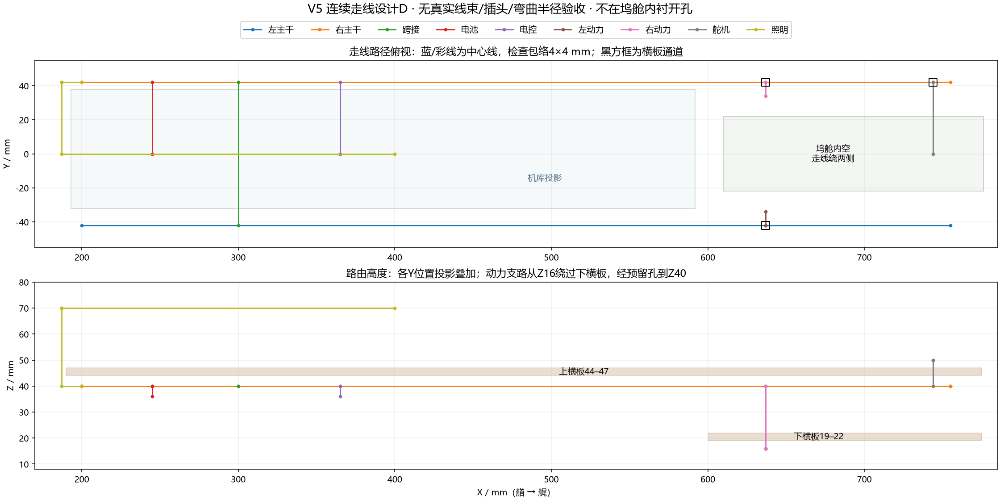
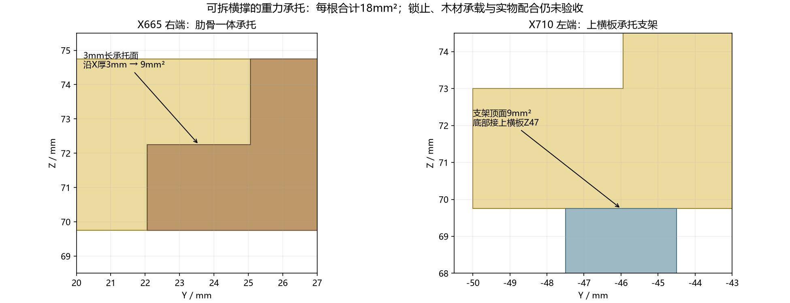
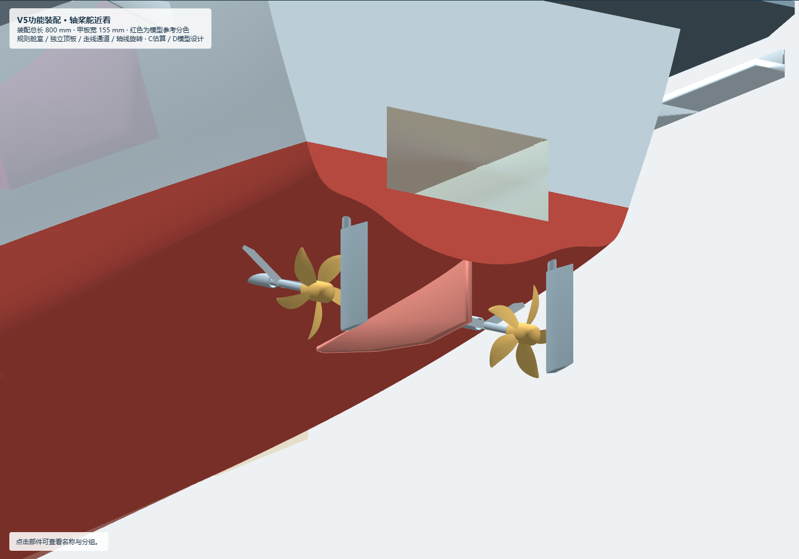
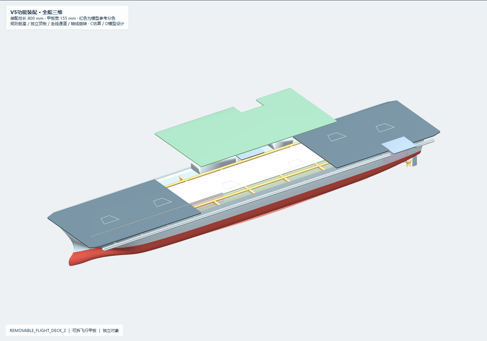
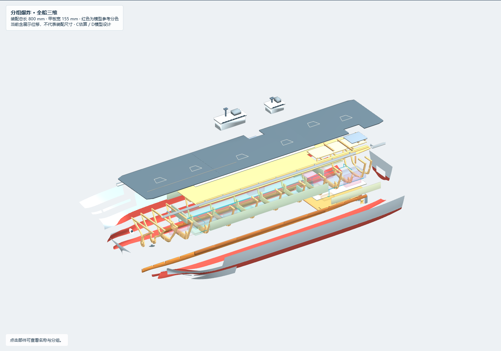

2026-10-17。本版在V4副本上完成可控轴线旋转、独立部件操作、坞舱五面围护及真正的艉门开口、规则机库板件和连续走线预留。总目标仍在进行：当前没有完成实物装配或可下水运行验收。硬件尚未选定是用户已确认的现状，不能用演示动画替代运行证据。

| 部位 | 本版变化 | 约束/代价 |
|---|---|---|
| 原模型 | 先保留7份输入及哈希；191个预计保留对象原生几何一致 | V4原件不覆盖；没有重新公平船体或改双岛/主甲板轮廓 |
| 运动与观察 | 桨/毂/轴绕原生轴线转动，支持启动/暂停/RPM；支持单件XYZ、隐藏/显示、复位 | 轴管固定；演示0–600RPM并非真实工作参数；非目标对象不随动 |
| 坞舱 | 新增左右壁、前壁、独立底板与可拆顶板；外板真实开口 | 下横板19–22不动，新增底内衬22–25；净高22→19，内空166×44×19 |
| 检修横撑 | 四根原顶部横撑成为独立件，增加半深承托台阶；X710增加承托 | 每根名义重力承托18mm²；支架上下接触9mm²。未验证锁止、载荷与材料强度 |
| 顶板 | 坞舱顶板留肋位边槽；两块顶板独立、可上取 | 先拆上方甲板及对应横撑；连续130mm提升不与当前剩余木质实体碰撞 |
| 机库 | 前后壁、左右壁及独立矩形顶板，主要使用规则3mm板 | 内空193–592、Y−32..38、Z47–73；体积约为旧预留的98.3%，避开左舷EMALS预留 |
| 阻拦机构 | D级规划预留改到X595–660 | 原X560–660长100缩至65mm，避开新机库后壁和X665肋位；未证明机构装得下 |
| 走线 | 左右主干、跨接和电池/电控/电机/舵机/照明支路 | 4×4mm矩形预留连通，17线段；内部横板/肋位有通道，不在坞舱围护上穿孔 |






| 检查 | 当前结果 | 证据边界 |
|---|---|---|
| 原生CAD | 装配233、骨架55、爆炸233个有效对象，mm单位，零Mesh；装配X0–800 | 原生回读；没有完成Rhino桌面打开/裸边/完整自交检查 |
| 静态实体 | 73个结构实体+11个封闭轴系实体，122对候选，无正体积交叠 | 显示网格布尔；不包含10片零厚度桨叶及4片轴支架的完整动态扫掠 |
| 桨轴线 | 原生轴端点到动画轴线误差约1.8e−15mm | 数学一致性，不是实舰轴系或实物同轴度 |
| 网页操作 | 233件逐件移动/恢复；144项视图及旋转检查通过 | 真实按钮/输入、计时播放、暂停、非目标件不动；无HTTP请求及脚本错误 |
| 坞舱 | 内底和顶面覆盖完整、三面壁无孔，横艉开口存在 | 几何五面围护；板缝并未胶封/水压测试 |
| 路线 | 17线段连通，26个路线/木板候选无交叠 | 有限4×4mm几何预留；不证明实际插头、弯曲半径和装线操作可行 |
| 顶板检修 | 连续130mm扫掠：坞舱6、机库5个候选木质实体均无碰撞 | 先拆甲板/横撑；不含未来厚蒙皮、真实紧固件及手部空间 |
| 侧壁/内底检修 | 五个组件共414个候选路径姿态无木板交叠 | 侧板先内移后抽出；内底先升高、倾转再取出。局部路径抽样不等于整船装配验证 |



| 项目 | 状态 | 仍需完成 |
|---|---|---|
| 螺旋桨启动、暂停、调转速，轴线对齐 | SOFTWARE_VERIFIED | 动画演示；真实电机转速、扭矩、供电与全角度实体动态净空未验收 |
| 甲板、机库顶板等独立选择、移动、隐藏、恢复 | SOFTWARE_VERIFIED | 显示拆解可自由移动，不自动保证任意移动方向都无碰撞；实际拆装须按经过检查的顺序 |
| 艉部坞舱五面围护，仅保留外侧艉门 | GEOMETRY_VERIFIED_PHYSICAL_PENDING | 几何围护成立；板缝、可拆接缝水密和锁止未试验 |
| 规则机库、合理隔板与连续走线 | LAYOUT_VERIFIED_HARDWARE_PENDING | 设备未选型；安装/散热/检修手部空间、接插件与线束弯曲尚未根据实物核验 |
| 实际装配、可下水运行、电控改装条件及最终检查 | INCOMPLETE | 3mm蒙皮/骨架协调、完整装配、锁止/密封、实际硬件、重量浮态与物理运行未完成 |
实际装配和下水仍缺少关键证据。1.25mm肋骨内缩与3mm蒙皮未协调，部分外壳/附体仍为参考薄面。原动力预留尚未连上轴系：按当前轴线向前延长，会穿过下横板及上横板。硬件选定后必须规划轴管、联轴器、座架及密封，而不是把这些空盒叫作已安装推进系统。
可拆横撑现已能在模型中靠承托落位，但抗拔锁止、木材强度、实际配合、甲板密封及舱室板缝未验收。艉门下沿为Z25；未来若实际水面高于它，坞舱可进水，需要检查相应容积和密封工况。当前参考Z32不是设计吃水，不能用于推断下水状态。
尚无实物质量、设备重心、完整外壳与实际浮态结果，也没有真实电机/舵机的安装运行测试。当前交付不能标记为可下水，目标保持进行中。
网页自包含，无需安装软件或联网。原生模型均为独立可编辑曲面、Brep、挤出和曲线；网页三角化仅用于显示。Python生成器从inputs/v4备份读取，不重建外部母面；仅为横艉局部开口使用包内控制数据。